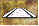
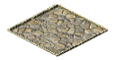

Access
per month
[*]
[*]
 Water-related structures
Water-related structures
{kind=link}
{kind=link}
{kind=link}
{kind=link}
{kind=link}
{kind=link}
{kind=link}
{kind=link}
![Altar [*]](img/altars.png){kind=link}
{kind=link}
![Large Temple [***]](img/ltemplev.png){kind=link}
![Grand Temple [*]](img/gtemplev.png){kind=link}
![Pantheon [*]](img/pantheon.png){kind=link}
![Lararium [*]](img/lararium.png){kind=link}
![Oracle [***]](img/oracle.png){kind=link}
![Small Mausoleum [*]](img/smallmaus.png){kind=link}
![Large Mausoleum [*]](img/largemaus.png){kind=link}
![Nymphaeum [*]](img/nymphaeum.png){kind=link}
![School [**]](img/school.png){kind=link}
![Library [**]](img/library.png){kind=link}
![Academy [**]](img/academy.png){kind=link}
{kind=link}
![Theater [**]](img/theater.png){kind=link}
![Tavern [*]](img/tavern.png){kind=link}
{kind=link}
![Arena [*]](img/arena.png){kind=link}
![Colosseum [***]](img/colosseum.png){kind=link}
![Hippodrome [***]](img/hippodrome.png){kind=link}
{kind=link}
{kind=link}
{kind=link}
{kind=link}
![Desirability, Small [*]](img/desirabilitys.png){kind=link}
![Desirability, Medium [*]](img/desirabilitym.png){kind=link}
![Desirability, Large [*]](img/desirabilityl.png){kind=link}
{kind=link}
{kind=link}
{kind=link}
{kind=link}
![Overgrown Gardens [*]](img/ovgardens.png){kind=link}
![Garden Gate [*]](img/gardengates.png){kind=link}
{kind=link}
![Roadblock [*]](img/roadblock.png){kind=link}
{kind=link}
{kind=link}
![City Mint [*]](img/citymint.png){kind=link}
{kind=link}
{kind=link}
{kind=link}
{kind=link}
{kind=link}
{kind=link}
{kind=link}
![Work Camp [*]](img/workcamp.png){kind=link}
![Architect's Guild [*]](img/archg.png){kind=link}
![Lighthouse [*]](img/lighthouse.png){kind=link}
![Palisade [*]](img/palisade.png){kind=link}
![Palisade Gate [*]](img/palgate.png){kind=link}
{kind=link}
{kind=link}
{kind=link}
{kind=link}
{kind=link}
{kind=link}
{kind=link}
![Supply Post [*]](img/supplyp.png){kind=link}
![Watchtower [*]](img/watchtower.png){kind=link}
{kind=link}
{kind=link}
{kind=link}
{kind=link}
{kind=link}
{kind=link}
{kind=link}
![Raw Material, Stone Quarry [*]](img/stoneq.png){kind=link}
{kind=link}
![Raw Material, Sand Pit [*]](img/sandpit.png){kind=link}
{kind=link}
{kind=link}
![Raw Material, Gold Mine [*]](img/goldmine.png){kind=link}
{kind=link}
{kind=link}
{kind=link}
{kind=link}
{kind=link}
![Workshop, Brickworks [*]](img/brickw.png){kind=link}
{kind=link}
{kind=link}
{kind=link}
![Caravanserai [*]](img/caravan.png){kind=link}
![Cart Depot [*]](img/cartdepot.png){kind=link}
 Housing
Housing
 Clear land
Clear land
| Structure | Size | Road Access | Desirability | Workers | Cost | Levies [*] per month | Rotate [*] | Monument [*] | Description | |
|---|---|---|---|---|---|---|---|---|---|---|
| Effect | Range | |||||||||
| Water-related structures
| ||||||||||
| Reservoir | 3x3 | no | -6 | 3 | none | 80 dn | none | no | no | Creates pipe network. |
| Aqueduct | 1x1 | no | none | none | none | 8 dn [1] | none | no | no | Links Reservoirs together. |
| Fountain | 1x1 | no | none | none | 4 | 15 dn | none | no | no | Desirable water for housing; [6] |
| Well | 1x1 | no | -1 | 1 | none | 5 dn | none | no | no | Undesirable water for housing; [6] |
| Health-related structures | ||||||||||
| Barber | 1x1 | yes | +2 | 2 | 2 | 25 dn | none | no | no | [6] [10] |
| Baths | 2x2 | yes | +4 | 4 | 10 | 50 dn | none | no | no | Needs pipe access to Reservoir; [6] [10] |
| Doctor | 1x1 | yes | none | none | 5 | 30 dn | none | no | no | Helps to prevent disease; [6] [10] |
| Hospital | 3x3 | yes | -1 | 2 | 30 | 300 dn | none | no | no | Helps to cure disease; 1500 patients; [6] [7] [10] |
| Religious structures | ||||||||||
| Altar [*] | 1x1 | yes | +4 | 3 | none | 50 dn | none | yes | no | 50 people/one god. |
| Small Temple | 2x2 | yes | +4 | 6 | 2 | 50 dn | 4 dn | yes | no | 750 people/one god; [6] [7] |
| Large Temple [***] | 3x3 | yes | +14 | 5 | 5 | 150 dn | 8 dn | yes | 4 marble | 3000 people/one god; [6] [7] |
| Grand Temple [*] | 7x7 | yes | +20 | 5 | 50 | 2500 dn | 44 dn | no | yes | 5000 people/one god; [7] [11] [13] |
| Pantheon [*] | 7x7 | yes | +20 | 5 | 50 | 3500 dn | 48 dn | no | yes | Priest walker coverage to all 5 gods and 1500 people/all gods; [7] [11] [13] |
| Lararium [*] | 1x1 | yes | +4 | 3 | none | 45 dn | none | no | no | 10 people/all gods. |
| Oracle [***] | 2x2 | no | +8 | 6 | none | 200 dn | 4 dn | no | 2 marble | 500 people/all gods. |
| Small Mausoleum [*] | 2x2 | no | -8 [5] | 5 | none | 300 dn | 2 dn | yes | 2 marble | 500 people/all gods; [10] |
| Large Mausoleum [*] | 3x3 | no | -10 [5] | 6 | none | 750 dn | 2 dn | yes | yes | 750 people/all gods; [10] |
| Nymphaeum [*] | 3x3 | no | +12 | 6 | none | 250 dn | 4 dn | no | 4 marble | 750 people/all gods. |
| Education structures | ||||||||||
| School [**] | 2x2 | yes | -2 | 2 | 10 | 50 dn | none | no | no | 75/225 children; [6] [7] |
| Library [**] | 2x2 | yes | +4 | 4 | 20 | 75 dn | none | no | no | 800/1700 people; [6] [7] |
| Academy [**] | 3x3 | yes | +4 [5] | 4 | 30 | 100 dn | none | no | no | 100/150 young people; [6] [7] |
| Mission Post | 2x2 | yes | -3 | 2 | 20 | 100 dn | none | no | no | Peaceful contact with natives. |
| Entertainment structures | ||||||||||
| Theater [**] | 2x2 | yes | +2 | 2 | 8 | 50 dn | none | no | no | Needs actors; 500/1200 people; [6] [7] |
| Tavern [*] | 2x2 | yes | -2 [5] | 6 | 8 | 40 dn | none | no | no | Needs wine and meat/fish; 1200 people; [6] [8] [9] |
| Amphitheater | 3x3 | yes | +4 | 4 | 12 | 100 dn | none | no | no | Needs actors and gladiators; 1200 people; [6] |
| Arena [*] | 3x3 | yes | -3 | 3 | 25 | 500 dn | none | no | no | Needs gladiators and lion tamers; 2500 people; [6] |
| Colosseum [***] | 5x5 | yes | -3 | 3 | 100 | 1500 dn | 36 dn | no | yes | Needs gladiators and lion tamers; all people; [4] [6] [7] [13] |
| Hippodrome [***] | 5x15 | yes | -3 | 3 | 150 | 3500 dn | 72 dn | yes | yes | Needs charioteers; all people; [4] [6] [7] [13] |
| Actor Colony | 3x3 | yes | +2 | 2 | 5 | 50 dn | none | no | no | Supplies Theater and Amphitheater. |
| Gladiator School | 3x3 | yes | -3 | 3 | 8 | 75 dn | none | no | no | Supplies Amphitheater and Arena/Colosseum. |
| Lion House | 3x3 | yes | -3 | 3 | 8 | 75 dn | none | no | no | Supplies Arena/Colosseum. |
| Chariot Maker | 3x3 | yes | -3 | 3 | 10 | 75 dn | none | no | no | Supplies Hippodrome. |
| Administration or Government structures | ||||||||||
| Desirability, Small [*] | 1x1 | no | +3 | 3 | none | 12 dn | none | yes | no | Improves desirability; [2] |
| Desirability, Medium [*] | 2x2 | no | +10 | 4 | none | 60 dn | none | yes | no | Improves desirability; [2] |
| Desirability, Large [*] | 3x3 | no | +14 | 5 | none | 150 dn | none | yes | no | Improves desirability; [2] |
| Governor's House | 3x3 | yes | +12 | 3 | none | 150 dn | none | no | no | Improves desirability. |
| Governor's Villa | 4x4 | yes | +20 | 4 | none | 400 dn | none | no | no | Greatly improves desirability. |
| Governor's Palace | 5x5 | yes | +28 | 5 | none | 700 dn | none | no | no | Greatly improves desirability. |
| Gardens | 1x1 | no | +3 | 3 | none | 12 dn [1] | none | no | no | Improves desirability. Allows walkers. |
| Overgrown Gardens [*] | 1x1 | no | +3 | 3 | none | 12 dn [1] | none | no | no | Improves desirability. Disallows walkers. |
| Garden Gate [*] | 1x1 | over | 0 | 0 | none | 12 dn | none | no | no | 5 types; [12] |
| Plaza | 1x1 | over | +4 | 2 | none | 15 dn [1] | none | no | no | Placed over roads; improves desirability. |
| Roadblock [*] | 1x1 | over | none | none | none | 12 dn | none | yes | no | 6 colors; [12] |
| Forum | 2x2 | yes | +3 | 2 | 6 | 75 dn | none | no | no | Collects taxes. |
| Senate | 5x5 | yes | +8 | 6 | 30 | 400 dn | none | no | no | Stores tax money & improves desirability; [13] |
| City Mint [*] | 3x3 | yes | -3 | 3 | 40 | 250 dn | none | yes | yes | Allows Gold <=> Dn conversion; requires Senate; [13] |
| Triumphal Arch | 3x3 | no | +18 [5] | 5 | none | 0 dn [3] | none | yes | no | Greatly improves desirability; [12] |
| Engineering structures | ||||||||||
| Engineer's Post | 1x1 | yes | none | none | 5 | 30 dn | none | no | no | Maintains buildings. |
| Low Bridge | 1xX | no | none | none | none | 40 dn [1] | none | no | no | Blocks ship passage. |
| Ship Bridge | 1xX | no | none | none | none | 100 dn [1] | none | no | no | Allows ships to pass. |
| Shipyard | 2x2 | yes | -8 | 3 | 10 | 100 dn | none | no | no | Builds fishing boats. |
| Dock | 3x3 | yes | -8 | 3 | 12 | 100 dn | none | no | no | Allows trade by sea; [8] |
| Wharf | 2x2 | yes | -8 | 3 | 6 | 60 dn | none | no | no | Uses fishing boats to provide fish. Fish can be consumed in Tavern. |
| Work Camp [*] | 3x3 | yes | -10 | 4 | 20 | 150 dn | none | no | no | Transports materials to monument construction sites; [9] |
| Architect's Guild [*] | 2x2 | yes | -8 | 4 | 12 | 200 dn | none | no | no | Constructs monuments. |
| Lighthouse [*] | 3x3 | yes | +6 | 4 | 20 | 1250 dn | 8 dn | no | yes | Requires timber; [7] [9] [11] [13] |
| Security structures | ||||||||||
| Palisade [*] | 1x1 | no | none | none | none | 6 dn [1] | none | yes | no | Impedes invaders (weak). |
| Palisade Gate [*] | 1x1 | over | none | none | none | 6 dn | none | no | no | Impedes invaders (weak); [12] |
| Wall | 1x1 | no | none | none | none | 12 dn [1] | none | no | no | Impedes invaders. |
| Tower | 2x2 | yes | -8 | 3 | 6 | 150 dn | 2 dn | no | no | Placed over walls; supplies guards and ballista. |
| Gatehouse | 2x2 | no | -4 | 3 | none | 100 dn | none | yes | no | Provides passage through walls; [12] |
| Prefecture | 1x1 | yes | -2 | 2 | 6 | 30 dn | none | no | no | Police and firefighting. |
| Fort | 4x7 | no | -20 | 6 | none | 1000 dn | 8 dn | yes | no | Base for soldiers. |
| Military Academy | 3x3 | yes | -3 | 3 | 20 | 1000 dn | none | no | no | Improves soldier quality; [13] |
| Barracks | 3x3 | yes | -6 | 3 | 10 | 150 dn | none | no | no | Allows Forts and Towers to recruit soldiers; [9] [13] |
| Supply Post [*] | 3x3 | yes | -8 | 4 | 10 | 100 dn | none | no | no | Provides food for soldiers; [8] [9] [13] |
| Watchtower [*] | 2x2 | yes | -6 | 3 | 8 | 100 dn | none | yes | no | Protects inner city. |
| Industrial structures | ||||||||||
| Farm, Fruit | 3x3 | yes | +2 | 2 | 10 | 40 dn | none | no | no | Food source. |
| Farm, Olive | 3x3 | yes | +2 | 2 | 10 | 40 dn | none | no | no | Raw material for oil. |
| Farm, Pig | 3x3 | yes | -2 | 2 | 10 | 40 dn | none | no | no | Food source, also consumed in Tavern. |
| Farm, Vegetable | 3x3 | yes | -2 | 2 | 10 | 40 dn | none | no | no | Food source. |
| Farm, Vine | 3x3 | yes | +2 | 2 | 10 | 40 dn | none | no | no | Raw material for wine. |
| Farm, Wheat | 3x3 | yes | -2 | 2 | 10 | 40 dn | none | no | no | Food source; most efficient in central provinces. |
| Raw Material, Marble Quarry | 2x2 | yes | -6 | 4 | 10 | 50 dn | none | no | no | Marble for monuments. Must build near rocks. |
| Raw Material, Stone Quarry [*] | 2x2 | yes | -6 | 4 | 10 | 60 dn | none | no | no | Stone for monuments. Must build near rocks. |
| Raw Material, Clay Pit | 2x2 | yes | -3 | 2 | 10 | 40 dn | none | no | no | Raw material for pottery and bricks; required for City Mint. Must build near water. |
| Raw Material, Sand Pit [*] | 2x2 | yes | -6 | 4 | 10 | 40 dn | none | no | no | Raw material for concrete and bricks. Must build near water. |
| Raw Material, Timber Yard | 2x2 | yes | -4 | 3 | 10 | 40 dn | none | no | no | Raw material for furniture; required for monuments. Must build near trees. |
| Raw Material, Iron Mine | 2x2 | yes | -6 | 4 | 10 | 50 dn | none | no | no | Raw material for weapons; required for City Mint. Must build near rocks. |
| Raw Material, Gold Mine [*] | 2x2 | yes | -6 | 4 | 30 | 100 dn | none | no | no | Gold can be turned into Denarii in the City Mint; required for Pantheon. Must build near rocks. |
| Workshop, Pottery | 2x2 | yes | -4 | 2 | 10 | 40 dn | none | no | no | Turns clay into pottery; [9] |
| Workshop, Furniture | 2x2 | yes | -4 | 2 | 10 | 40 dn | none | no | no | Turns timber into furniture; [9] |
| Workshop, Oil | 2x2 | yes | -4 | 2 | 10 | 50 dn | none | no | no | Turns olives into oil; [9] |
| Workshop, Wine | 2x2 | yes | -1 | 1 | 10 | 45 dn | none | no | no | Turns vines into wine, also consumed in Tavern; [9] |
| Workshop, Weapons | 2x2 | yes | -4 | 2 | 10 | 50 dn | none | no | no | Turns iron into weapons, used by legionaries; [9] |
| Workshop, Brickworks [*] | 2x2 | yes | -3 | 4 | 10 | 80 dn | none | no | no | Turns clay and sand into bricks; [9] |
| Workshop, Concrete Maker [*] | 2x2 | yes | -3 | 4 | 10 | 60 dn | none | no | no | Turns sand into concrete, needs Reservoir/Fountain/Well nearby, cannot be stored; [9] |
| Market | 2x2 | yes | -2 [5] | 6 | 5 | 40 dn | none | no | no | Distributes commodities to houses; [6] [8] [9] |
| Granary | 3x3 | yes | -4 | 2 | 6 | 100 dn | none | no | no | Stores food; [8] |
| Warehouse | 3x3 | yes | -5 | 3 | 6 | 70 dn | none | yes | no | Stores goods for export and accepts imports; [8] |
| Caravanserai [*] | 4x4 | yes | -10 | 4 | 20 | 500 dn | 8 dn | no | yes | Requires food; [8] [9] [11] [13] |
| Cart Depot [*] | 2x2 | yes | -3 | 2 | 15 | 100 dn | none | no | no | Allows to move resources between two locations. |
| Other | ||||||||||
| Housing
| 1x1 | yes | varies | varies | none | 10 dn [1] | none | no | no | Provides employees. |
| Clear land
| 1x1 | - | - | - | - | 2 dn [1] | - | - | - | Demolish structures and trees. |
| Road | 1x1 | - | none | none | none | 4 dn [1] | none | no | no | Provides road access. |
| Highway [*] | 2x2 | - | none | none | none | 100 dn [1] | 1 dn | no | no | Provides 2x faster movement for destination walkers. |
| Rubble | 1x1 | - | -1 | 1 | none | - | none | - | - | Demolished, destroyed, collapsed or burned down structure ruins. |
[*] Added in Augustus (except Statues).
[**] New in Augustus: covers more people if upgraded.
[***] Converted into monument in Augustus.
[1] Per segment.
[2] All structures that only improve desirability fall there: Statues (5 new types), Trees (8), Parks (8), Paths (9), Ponds (2), and Obelisk (1).
[3] Awarded by Caesar.
[4] Provides additional function: Colosseum games, Hippodrome betting.
[5] Desirability increases with distance.
[6] Housing service.
[7] Helps Culture rating.
[8] Features Special Orders button.
[9] Requires and consumes commodities to function properly.
[10] Improves overall city health.
[11] Provides unique bonus for one time Dn investment.
[12] Built over roads + features roadblock controls.
[13] Only one can exist in a city.
{kind=link}
![Highway [*]](img/highway.png){kind=link}
{kind=link}